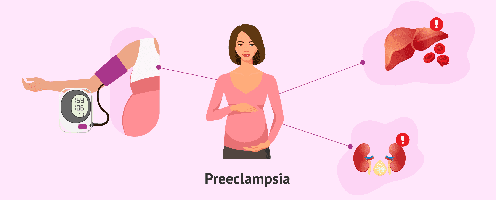
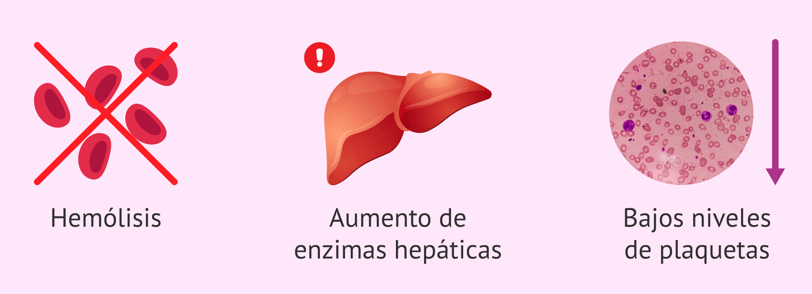

⬆️ Hipertensión gestacional
¿Qué es?
- Es el aumento de la presión arterial que aparece después de la semana 20 de embarazo en mujeres que antes tenían la presión normal. No suele causar daño a órganos ni aparece proteína en la orina
¿Cómo se manifiesta?
- Generalmente no causa síntomas y se detecta en los controles de rutina.
- En algunos casos puede haber dolor de cabeza, visión borrosa o zumbidos en los oídos.
¿Qué hacer?
- Asiste a todos tus controles prenatales para que te midan la presión arterial regularmente.
- Sigue las recomendaciones médicas sobre dieta, actividad física y medicación si es necesario.
El monitoreo regular ayuda a evitar complicaciones y detectar a tiempo la progresión a preeclampsia.
💥 Preeclampsia

¿Qué es?
- Es una complicación que incluye presión arterial alta y presencia de proteínas en la orina (proteinuria) después de la semana 20, y puede afectar otros órganos como hígado, riñones y plaquetas.
¿Cómo se manifiesta?
- Dolor de cabeza intenso, alteraciones en la visión y sensibilidad a la luz.
- Hinchazón de manos, pies o cara.
- Dolor en la parte alta del abdomen o debajo de las costillas.
- Náuseas, vómitos y disminución de la cantidad de orina.
¿Qué hacer?
- Informa inmediatamente a tu médico si tienes los síntomas mencionados.
- El tratamiento puede requerir reposo, medicamentos, internación o adelantar el parto en casos graves.
La preeclampsia puede evolucionar rápidamente; la atención médica temprana es fundamental.
⚡ Eclampsia
¿Qué es?
- Es la forma más grave de la preeclampsia, en la que además de los síntomas anteriores se presentan convulsiones (ataques) que pueden poner en peligro la vida de la madre y el bebé.
¿Cómo se manifiesta?
- Convulsiones o pérdida de conciencia.
- Señales previas de preeclampsia (dolor de cabeza, visión borrosa, dolor abdominal intenso).
- Puede aparecer de forma repentina, incluso sin síntomas previos claros.
¿Qué hacer?
- La eclampsia es una emergencia médica. Llama o acude al hospital de inmediato.
- No intentes manejar la situación en casa ni automedicarte.
La atención rápida puede salvar la vida de la madre y del bebé.
🩸 Síndrome de HELLP

¿Qué es?
- Es una complicación grave relacionada con la preeclampsia que implica la destrucción de glóbulos rojos, alteraciones en las enzimas hepáticas y disminución de plaquetas. Puede presentarse sola o junto con la preeclampsia, y es potencialmente mortal si no se trata.
¿Cómo se manifiesta?
- Dolor intenso en la parte superior derecha del abdomen.
- Náuseas, vómitos o malestar general.
- Dolor de cabeza, visión borrosa.
- Hinchazón y aumento rápido de peso y en casos graves sangrado
¿Qué hacer?
- Consultar de inmediato ante síntomas de alarma.
- El tratamiento requiere internación hospitalaria y, en la mayoría de los casos, el nacimiento anticipado del bebé.
No siempre está acompañado de presión alta, por eso es importante no ignorar los síntomas.